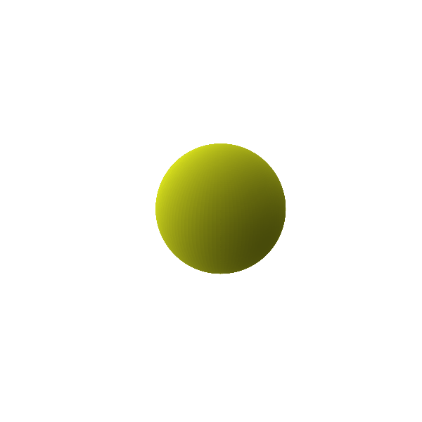
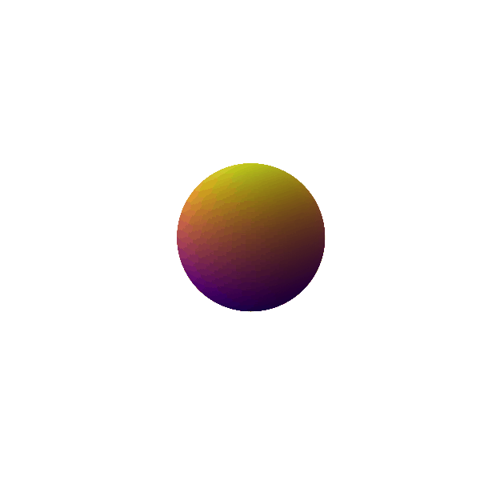
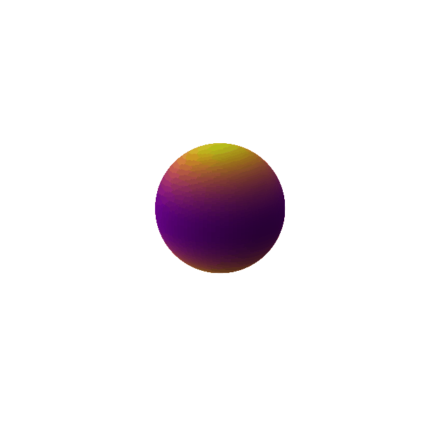

I have always been absolutely awestruck by the fact that gravitational radiation can only be quadrupolar and never understood it quite intuitively until I took some time and found analogies and visualizations to understand it. I am documenting this for future reference for me and anyone who would find this useful. So let's begin!
For understanding something that I do not have a grasp on at all, I generally start from what I do understand about the topic. Naively, if I were to ask my undergraduate self: "How can you possibly produce gravitational radiation?" I would have had some ideas. Let me start from there.
Mass produces curvature and this curvature is what forms our notion of gravity. So if I were to provide some momentum to this mass and change its distribution spatially, the metric which helps us define curvature should change and that should produce gravitational radiation. This idea isn't entirely wrong but to understand the beautiful nuances of general relativity, we need to dive in deeper.
.png)
Consider a uniform spherical mass distribution of mass m as shown in the left panel of the figure. With some notions of Newtonian gravity, we know that measuring gravitational field at r > R for this mass distribution should be exactly equivalent to measuring the gravitational field of a mass m concentrated at r = 0 as shown in the right panel. This happens because the fields of all the individual masses add up and lead up to being equivalent to a concentrated mass rather than a distribution. This ideology is extremely important in understanding gravitational radiation. As long as the total mass enclosed inside a given shell is the same and has spherical symmetry, the field outside would be the same irrespective of how it's arranged inside. The analogue of this theorem is the Birkhoff theorem in general relativity. Birkhoff's theorem states that any spherically symmetric solution of the vacuum field equations must be static and asymptotically flat, meaning it should follow the Schwarzschild metric. The Schwarzschild metric for the exterior of a static object under consideration is expressed as follows:
\[ds^2 = \left(1 - \frac{2GM}{c^2r}\right)c^2dt^2 + \left(1 - \frac{2GM}{c^2r}\right)^{-1}dr^2 + r^2d\Omega^2\]
The first time I noticed that this metric has no mention of R_{\text{obj}} of the object under consideration, I was so surprised. This means no matter what is the difference in the compactness of two objects in consideration, as long as they are the same mass and spherically symmetric, the metric in their exteriors would look exactly the same...
The monopolar radiation (if it existed), would come from the zeroth moment of a mass distribution, which is just its total mass. An oscillation of this monopole (\(\ell = 0\)), often termed as the breathing mode is shown in Figure 2...
...The dipole provides one additional trinket of information about the mass distribution under consideration than the monopole distribution; i.e. the mean or the center of mass of the distribution...
...If the object is now oscillating in the quadrupolar mode (\(\ell = 2\)) as shown in Figure 4, it is neither spherically symmetric, nor can we pick a frame in which this effect would go away...
So yeah, it's all very fascinating and exciting. But to conclude, monopolar and dipolar gravitational radiation does not exist. The leading order contribution to the gravitational radiation is from the quadrupolar mode but higher modes also exist. This is also why we need two polarizations for describing the gravitational waves because they are created using an \(\ell = 2\) excitation. I love this field man. Cheers.